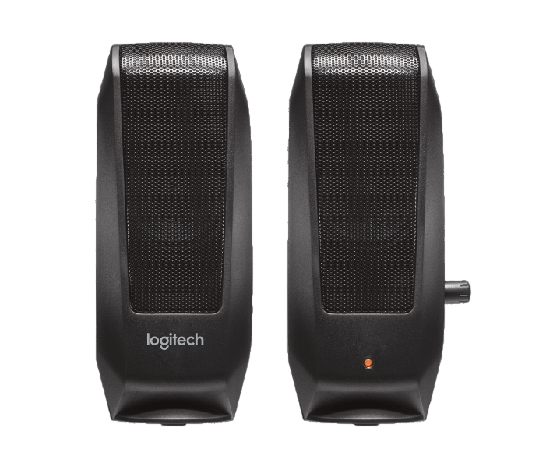
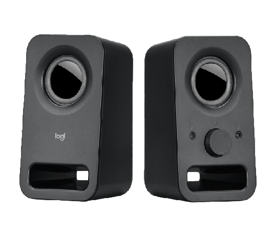
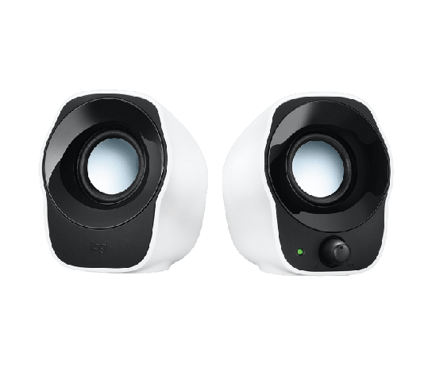
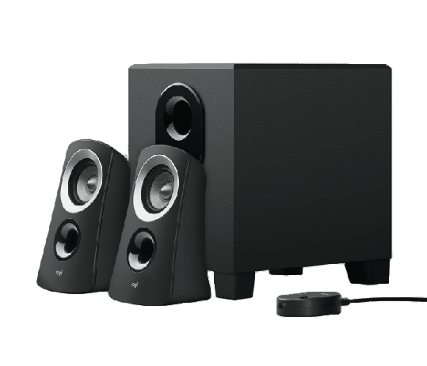
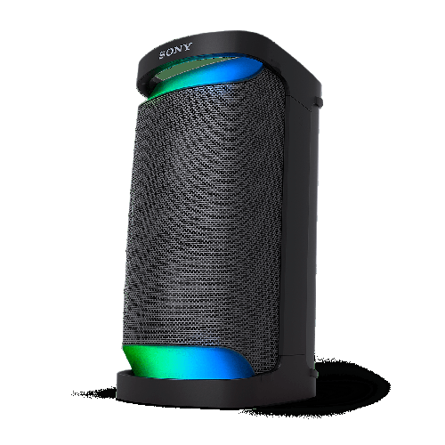
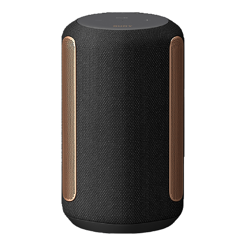

|  |
 |
 |
 |
Altavoces estéreo S120 |
Altavoces estéreo Z150 |
Altavoces estéreo compactos |
Sistema de altavoces Z313 |
| Cualquier entrada de 3,5 mm (0,14 in) |
Total de vatios reales (RMS): 3W |
Total de vatios reales (RMS): 1,2 W |
Altavoces satélite: 2 x 5 W |
| Potencia de 4,4 watts (pico)/2,2 watts (RMS) |
Entrada de 3,5 mm: 2 (hasta 1080p) |
Entrada de 3,5 mm: 1 |
Total de vatios reales (RMS): 25 W |
| Altavoces satélite |
Altura: 151,5 mm, Ancho: 84,5 mm |
Altura: 110 mm, Ancho: 90 mm |
Entrada de 3,5 mm: 1 |
| $439.00 |
$729.00 |
$549.00 |
$1,999.00 |
.png) |
 |
 |
Bocina inalámbrica portátil EXTRA BASS™ XB13 |
Bocina inalámbrica portátil XP500 de la serie X |
Bocina inalámbrica premium SRS-RA3000 |
| Tamaño compacto y correa multiposición |
Potente sonido de fiesta que ofrece X-Balanced Speaker Unit |
Transmisión de música por Wi-Fi y Bluetooth |
| Sonido potente con EXTRA BASS™ |
Resistencia al agua |
Resistente a la humedad |
| Procesador de difusión del sonido dispersa aún más el sonido |
Duración de batería de 20 horas |
Sonido ambiental |
| $1,399 |
$8,999 |
$7,199 |